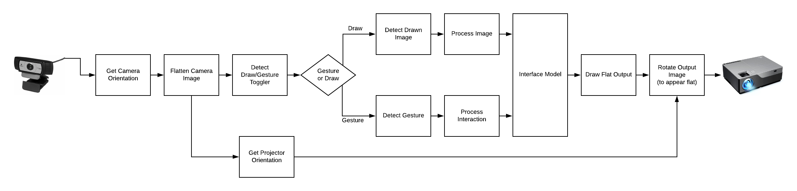

Project Details
When - Fall 2019
Duration - Approx. 6 weeks
Course - Machine Learning and Sensing, Carnegie Mellon University
Skills - Machine Learning + UX design + System design
Teammates - Matt Franklin and Lauren Whittingham
Scope
For our final project of ML + Sensing - our team was very focused on this concept of creating interactive controllers for computers based on drawing surfaces. With our studio being filled with whiteboards - we imagined a world where basic cameras and projectors could read drawings off a white board and interact with them or read the drawings as controllers for a computer.
Problem
Smart boards are too expensive
Smart boards require built in computers
Smart boards do not allow for novel interaction
Smart boards do not leverage existing infrastructure
Solution
Intelliboard is an intelligent application that works leverages a web cab and a projector to turn a smart board into an interactive intelligent display. Intelliboard uses user drawing, gesture recognition, and basic voice command to create a truly dynamic white board experience.
My code can be checked out here!Process
For this project - our team conducted individual sprints with a combined effort of creating a smart board application. Matt focused primarily on keying a camera and projector so that no matter the angle at which they were to the wall - the image (and what the computer reads visually) is flat. Lauren focused on shape recognition and creating bounding boxes, while I focused on gesture and getting a machine learning algorithm to understand basic interaction with shapes. All of us completed our work using Sci-kit learn, open CV, Jypter notebooks and visual studio.
My code can be checked out here!Concept
There have been dozens of attempts to merge the collaboration and communication capabilities of a whiteboard with the dynamic interaction of digital tools, but they have always had a digital first design mentality or hardware focused solution. We have aimed to reverse this trend by making an ordinary whiteboard capable of digital interaction. Through the use of machine learning and computer vision we have been able to create a working prototype that can automatically calibrate itself, detect drawn shapes, and detect gestures.
Model of Intelliboard system
The camera acts as the key to this process. Using OpenCV, jypiter notebooks, and scikit learn machine learning algorthims, the camera is able to determine orientation, flattens the image, and then interpret what it sees on the white board. At that point the user would either be in an interact or draw state. These images would then go back to the camera to be processed and the model would be updated with the projector
Gesture Interaction: Slider, Rotary, Button
With my focus being on the interactive aspect of the system I looked towards creating novel gesture interactions with drawn objects on a white board. Since some of the most common interactions on digital touch screen devices today are rotary knobs, sliders, and push buttons - I wanted to create a way to translate this language with our system. By leveraging the shape detection, I decided to create an algorithm to read slider position and rotary position.
Approach: How it would work
The system would first detect a shape (line or circle) and then create bound box around the shape. From there it would look for intentional motion in that bounding area that would then be cross referenced to our ml algorithm. This data then would feed back into our total pipeline and give the user feedback that it received the command and update the model view.
Using the bounding box incoming data - we will use machine learning to featurize and classify to determine where the hand is in relation to the shape. The system will be trained on both the left and right hand to make it adaptable. It will also use features that are not affected by ambient conditions (light, temp,etc).
Training: Ground truth images
Using stills from my videos of preforming actions - I generated 120 images of rotary knob on a 12” circle (15 stills at 0,90,180,270 deg increments both left and right hand) and 110 images of a 18” slider (11 images at 0%,25%,50%,75%, and 100% increments - both left and right hand). These images were all shot with the same camera we were going to use for our final demonstration to assure success.
Featurizing
Initial attempts focused at using individual features based on grayscale mean/std, edge detection mean/std, and threshold curvature (single numerical values) but found that performance was low due to overlap in Left and right hand. I instead opted to preprocess the photos to a low resolution (around 40 x 40 pixels) and run the entire image as a feature. This brought performance up significantly and proved to be a successful approach.
A visualization of preprocessed image, to 40x40 pixel image, to canny/threshold detection, to combined feature vector
Testing
The algorithm was trained and tested through 10 fold cross validation and the features were not normalized. The highest preforming by far was Random forest - but I also tried SVM-RBF, SVM-linear, and KNN neighbor. Results with random forest were coming in around 92% for Slider but significantly lower for rotary around 82%. Also - during live testing with a camera the system behaved strangely and unpredictable even when training conditions were mimicked. I knew that more ground truth conditions could be an easy fix.
Increasing functionality
Because of these lack luster results - I went back and added an extra 120 images to rotary (of 45, 135, 215, 315 deg L+R) and 110 images to slider( 12,32,62 and 87% L+ R). I also added a no hand class - I thought this would be useful so that our total pipeline would know to ignore the space if there was no movement.
A gif of a live test of the slider functionality once performance was bolstered with more training data
Final Accuracy and Performance
Final performance for the slider with the added extra 5 ground truths ended up around 87-88% with random forest. For our implemented system this tested to be successful enough for a minimum viable product. Other classifiers - KNN - 75% / SVM_RBF - 23%. Final performance of the rotary system with the added extra 5 ground truths ended up around 92-94% with random forest. For our implemented system this tested to be successful enough for a minimum viable product. Other classifiers - KNN - 75% / SVM_RBF - 42%

{kind=link}
{kind=link}
{kind=link}
{kind=link}
{kind=link}
{kind=link}
{kind=link}
{kind=link}
{kind=link}
{kind=link}
Final intergration
Using the incoming bounding box parameters from shape detection - pickle loaded the binary ml data and was able to successfully track motion of the hand and around arbitrary drawn lines and circles. Below is a link to the video of the entire project demo coming together.
Conclusion
Overall - as a team we felt that we accomplished our goals and were able to utilize ML and OpenCV to create a smart board type system. While our final project fell short of our initial goals - we feel that what we have created is an excellent proof of concept to exploring the domain. In the future I hope to better explore the implmentation of non-ML based gesture recognition for this sort of domain and also explore different featurization methods.
Sample Screens
With the project finished - I worked later on in the semester to create some sample screens of our our system could be leveraged. From playing videos for a class room, to creating a mood board, to wire framing. Intelliboard has the potential to give computer interaction to already existing infrastructure in schools and offices around the world.
{kind=link}
An example of what graphing mode would look like. User's would write graph in the status box on the right corner and draw a x and y graph quadrant. Then they could add a series of points in the space. The computer would automatically fit the points based on scale and determine what the equation of that line would be.
{kind=link}
An example of what video playing mode would look like. User's would write video in the status box on the right corner and draw the necessary controlls to stream a video from a computer. The controlls include the video box, a video scrubber, volume control, and play button.